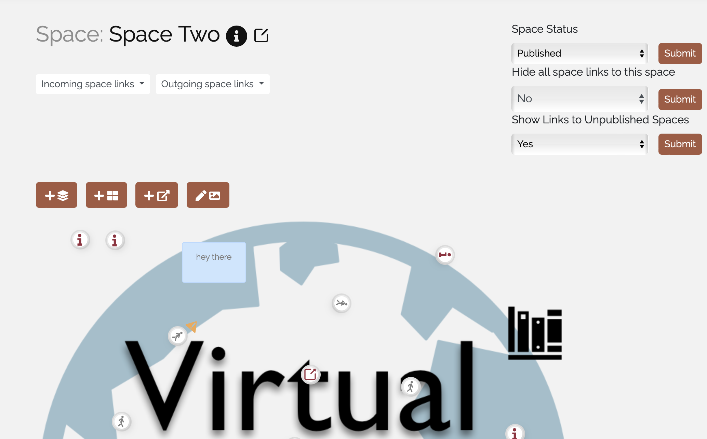
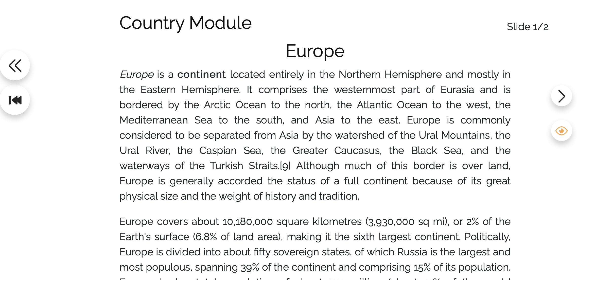
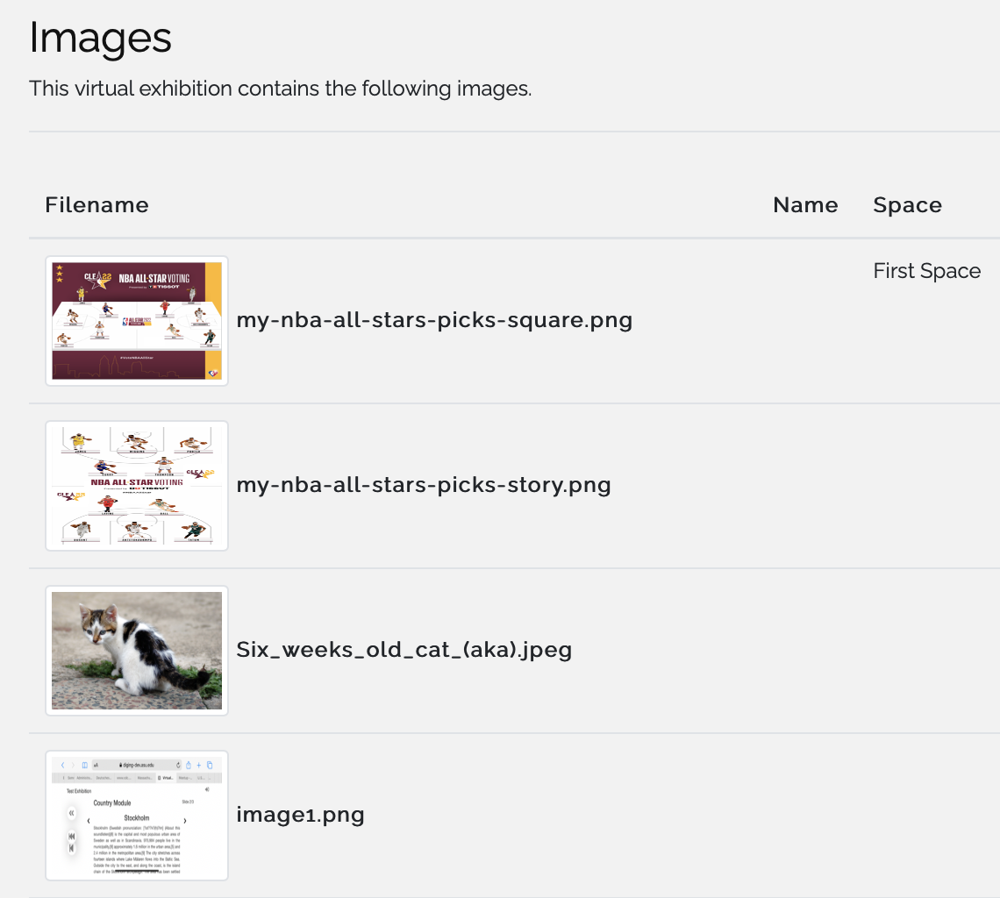

<div class='full'>
	<div class='row'>
		<div class='container'>
            <div style="text-align: center;">
                <h2>Make Your Spaces Online</h2>
                <p>Virtual Spaces 2.0 is a web application that can build your exhibition and spaces online. You can add spaces, modules, and images to make your virtual spaces more realistic.</p>
                <a href="https://diging.asu.edu/laubichler-lab/exhibit/space/SPA000000005" target="_blank"><button class="secondary-btn">Get started</button></a>
            </div>

            <div class="flex-spacing" style="margin-top: 100px">
                
                <div style="margin-left: 40px">
                    <h3>Spaces</h3>
                    <p>Virtual Spaces consist of spaces, and you can check spaces on the dashboard.</p>
                </div>
            </div>

            <div class="flex-spacing" style="margin-top: 100px">
                <div style="margin-right: 40px">
                    <h3>Modules</h3>
                    <p>Spaces usually consists of modules, which delivers specific information on individual spaces. Each module has sequences integrating slides and each slide delivers the information that should be given.</p>
                </div>
                
            </div>

            <div class="flex-spacing" style="margin-top: 100px">
                
                <div style="margin-left: 40px">
                    <h3>Images</h3>
                    <p>You can manage your images that you added on Virtual Spaces.</p>
                </div>
            </div>
        </div>
    </div>
</div>
